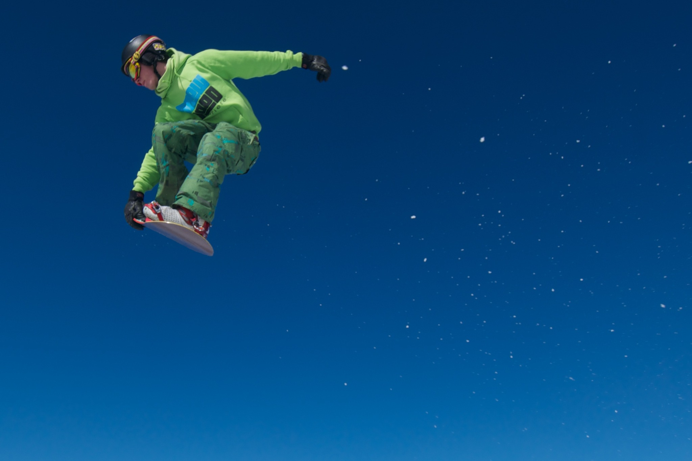

07:30–08:00
01
Coffee first
The Sage Barista Touch grinds the beans fresh. We leave an initial supply of Boutic Caffè: espresso, cappuccino, or simply a few minutes to look outside and decide where to ski.

Ski Sauze, cross the larches towards Sportinia, come home with your boots drying and the mountains still framed by the windows. Soft Wow Cabin is our base for living the snow without giving up the pleasure of coming home.

A ski week is not only about pistes. It is the rhythm of the mornings, equipment ready to go, choosing where to ski, coming back warm and the time that remains after the last run. Soft Wow Cabin is organised around exactly that rhythm.

These are the views from Soft Wow when the snow arrives: laden larches, the forest above Grand Villard, evening lights and Sauze just beyond. You do not have to wait until you are on the slopes to feel in the mountains.
Not a schedule to follow. Just the rhythm we like here: start well, choose the mountain according to the day, and come home without rushing.
The Sage Barista Touch grinds the beans fresh. We leave an initial supply of Boutic Caffè: espresso, cappuccino, or simply a few minutes to look outside and decide where to ski.
By car, we load skis and boots and head for Jouvenceaux or Clotes. Otherwise the winter ski-bus stop is about 250 m away, along a mostly flat walk.
From Jouvenceaux you head towards Sportinia; from Clotes you enter the Sauze ski area directly. From there, the day opens onto the Vialattea according to snow, weather and how far you feel like going.
Sauze, Sportinia and the Vialattea links make it easy to change route every day. A ski week does not have to become a race: ski hard, or stop when the landscape deserves it.

Before heading back, a mountain hut can be the right place for coffee, something sweet or an aperitivo. Opening times vary with the season and lifts; we prefer to leave room for the day itself.
Skis and boots stay in the private ski room; the Alpineheat boot dryer does the rest. Inside, the light changes, the snow turns blue and the slower part of the day begins.
The urban shuttle stop is a short, mostly flat walk from Grand Villard. The service is paid; times and fares vary during the season.
Around 2.8 km away, with free parking, ticket office and access to the Jouvenceaux–Sportinia chairlift. Our preferred option when you want to get straight onto the mountain.
Around 1.7 km away in central Sauze. Another convenient access to the ski area; parking nearby is paid.
Sauze d’Oulx is one of the gateways to the Vialattea. Stay on the Sauze pistes, head up towards Sportinia or, when links and conditions allow, continue into the wider ski area. That is what makes a full week here special: there is no need to repeat the same day.
 Explore the interactive map ↗
Explore the interactive map ↗A small edit of the things that actually help shape the day: conditions, pistes, ski bus and ideas beyond skiing. Seasonal details stay with the official sources, so this page remains useful without becoming a tourist portal.
Sauze, Sportinia, Clotes and higher ground: see what the mountain really looks like before you gear up.
Open webcams ↗TODAYOur WeatherFrame for checking snow, wind, temperature and conditions before heading out.
Check the weather ↓SKIMap, ski area and connections: stay in Sauze or let the day stretch further across Vialattea.
Explore the pistes ↗BUSThe local winter service connects the village with the lifts. It is paid and timetables are seasonal.
Times & information ↗SLOWSnow, larches and the Gran Bosco: for mornings that do not need to start on skis.
Explore winter walks ↗OFF DAYMountain lunches, walks, cafés, spas and ways to enjoy Sauze without skiing.
Ideas for the day ↗Operating information, timetables and conditions can change during the season. We therefore link to the official Sauze d’Oulx pages for the latest details.
Snow, wind, temperature and visibility shape the mountain day. This is the same WeatherFrame we designed for Soft Wow Cabin.
Skis, helmets and boots stay outside the apartment in the private, locked ski & bike room. There is a bench for changing, storage for equipment and an Alpineheat boot dryer. Sockets are also available for e-bike charging.
From the blue of morning to the warm lights of evening, the landscape becomes part of the house — including the hours when you are not skiing.


Bedroom 140×190 cm · double sofa bed 140×200 cm · travel cot available for a young child.
Private and beside the house. Particularly useful when it snows or you want an early start.
Ohme PRO Type 2 wallbox with tethered cable; charging included in the stay.
Independent access with Nuki + keybox. Check-in from 17:00, check-out by 10:00.
Quieter than the centre, which remains about a 15-minute mostly flat walk away.
A fully equipped kitchen and our coffee ritual for early ski mornings and slow returns.
Fast connection for work, a film, or simply planning the next day on the mountain.
Soft Wow Cabin sleeps up to four in Grand Villard, with the practical details that make more than a weekend in Sauze and the Vialattea feel easy.